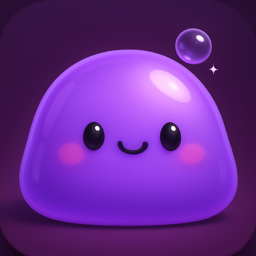

FidgetLog
Tu tacto da forma a su ADN
Próximamente
Conoce a Gloop, una mascota blandita cuyo cuerpo es un registro de cómo la tocas. Si le das toques, le salen picos; si la estiras, crece a lo largo; si la aprietas, se pone redonda. No hay dos criaturas iguales.
Qué hace
- Un blob vivo: se abolla, se estira, rebota y sigue tu dedo con los ojos
- ADN de fidget: quienes tocan le sacan picos, quienes estiran la alargan, quienes aprietan la redondean y quienes juegan de noche la hacen brillar. Una tira bajo su nombre muestra el ADN cambiando mientras juegas
- Evolución: una página por cada día que juegas, con tu criatura como se veía esa noche y los momentos que la cambiaron
- Comida: plástico de burbujas (desliza para reventar toda una fila), bolitas suaves de arcilla y jabón para rebanar
- Pop-Eggs: termina una hoja para que nazca uno de 14 mini-blobs extravagantes. Se ganan, nunca se venden
- Cuidados y siesta: aliméntala, límpiala, cepíllala y púlela, y luego arrópala con lluvia, toques suaves o un zumbido grave
- Clips y tarjetas diarias para compartir tu blob
Gratis, con una pequeña mejora de pago único para los extras. Sin anuncios, sin suscripción, sin cuenta. Todo se queda en tu teléfono.